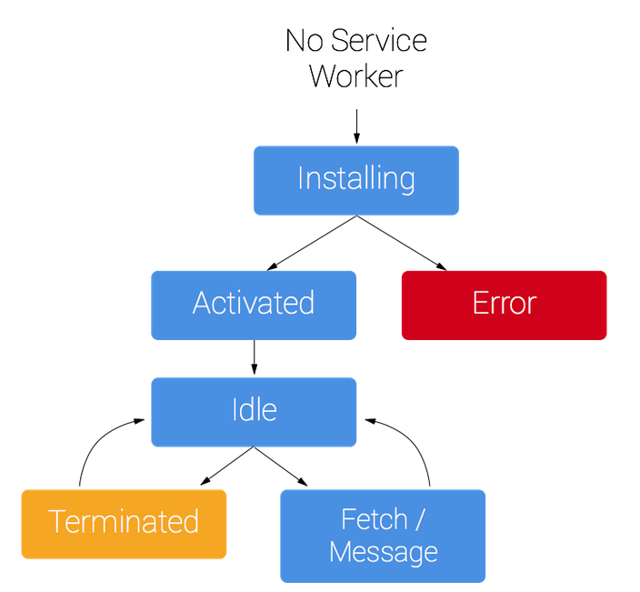

service worker
特点
- install之后会一直运行，且会自动更新
- 只能在HTTPS中运行，可以进行资源缓存
- 可以通过postMessage传递消息
- 不能操作DOM
- 单独线程运行，不会被阻塞，也不阻塞其他js，适用于复杂计算
过程

注册
此过程一般在主函数中进行，需要进行属性检测。注册时需要指定service worker文件位置，可以同时指定此worker的管理范围
安装
注册后，浏览器会尝试安装并激活，故install事件会在安装完成后触发，此事件可以被监听
install事件一般是被用来填充你的浏览器的离线缓存能力，此处需要使用cachestorage的APIcaches，根据指定的key存储网络请求资源。此缓存会一直持久存在，直至手动删除- 整个缓存过程需要在安装完成之前完成，所以用到waitUtil方法。可以在第一个fetch事件之前完成所有缓存
localStorage是同步存储，不允许在service worker中使用- 可以使用
IndexDB做数据存储
激活
安装完成后service worker会被激活，
activate事件可以被监听激活一般用户删除旧缓存。当需要缓存更新时，通过key的白名单，删除旧缓存。
此过程也使用
waitUtil，可以在第一个fetch事件前完成清理操作fetch事件
通过捕捉控制scope范围内的fetch事件，service worker可以实现对所有请求的控制
捕获fetch事件后，使用
event.respondWith可以劫持HTTP响应，完成各种操作，详见service workers更新
如果你的 service worker 已经被安装，但是刷新页面时有一个新版本的可用，此时
- 新版会在后台安装，但是还没激活。
当不再有任何已加载的页面在使用旧版的时候，新版本才会激活。
注意此过程中
- service worker的文件名不能发生变化，否则无法发现版本更新
注册的service worker名称不能发生变化，有人会在名称后面跟时间戳以实时监测sw文件更新得到最新缓存，但会导致每次都注册新的service worker，系统负担很大，得不偿失。
正确监测sw文件更新两种方法：
- 服务端配置sw.js为no-cache不缓存，每次更新单独请求，此方法需要单独服务端配置
将注册过程单独写入js文件，在主文件中每次带上时间戳请求最新的该文件。
在注册文件中，注册时带上上线版本号，保证每上线一次，会且只会重新注册一个新的sw，立即完成新文件缓存
新旧版之间可以通过key区分cache，注意旧cache的删除
Q&A
不同路径下注册
Q：
/a路径下能否注册根路径下的service workerA：可以，注册之后访问根路径时该
service worker也会使用，此时资源来源为from disk cache。不过要注意对不同路径所需资源的支持，此处需要缓存文件列表与fetch请求监听的共同支持，尤其是在单页面应用上，vuerouter的history模式下不同路径会访问同一份资源断网
unregister后不同路径下的不同表现Q：断网情况下，
unregister掉/a路径注册在根路径下的service worker，此时再刷新页面a的确无法访问。但是转而访问根路径页面可以访问，观察到一个新的worker被重新注册并获取资源，何处注册，何处拿到资源？A：在devtools的network中可以发现，断网
unregister后页面来源为from disk cache，故页面资源从硬盘缓存中获取，并在其中注册单页面应用history模式下拦截其他路径下请求
Q：vuerouter的history模式下，使用path区分不同页面的路径，本质仍为单页面，需要服务器做相应配置，在不同路径下返回同一份html文件，此时HTTP缓存位于不同路径下。当无网络时访问一个全新路径，由于没有该path缓存，页面会访问失败，可以使用service worker返回相关资源
A：在service中具体做法类似于服务端的配置，对特定路径下的html资源访问均从缓存中匹配主文件或发起根路径资源请求，如下示
if (event.request.url.indexOf('/b') > 0) { // return fetch('/'); return caches.match('/'); }此种方法即可解决SPA应用不同路径下缓存不同问题